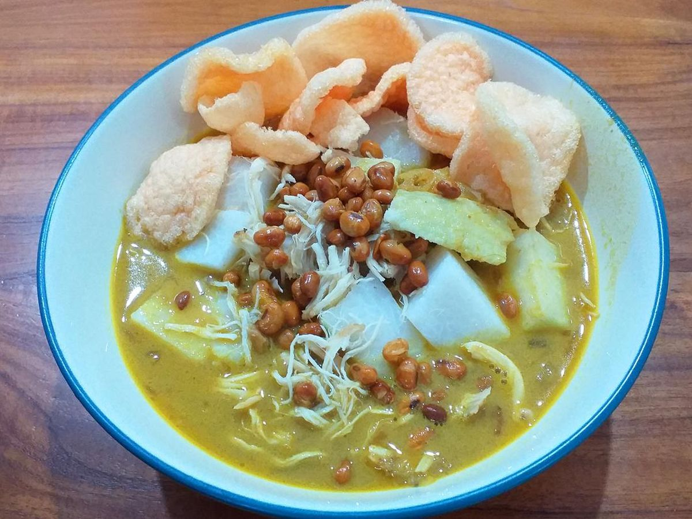

hidangan sarapan khas Bandung berupa potongan lontong yang disiram kuah santan kental berempah, dilengkapi dengan suwiran daging ayam atau potongan daging sapi, telur rebus, kacang kedelai, dan taburan bawang goreng
1 kg daging sapi, 1 liter santan kental murni, dan aneka rempah aromatik seperti daun kunyit dan serai